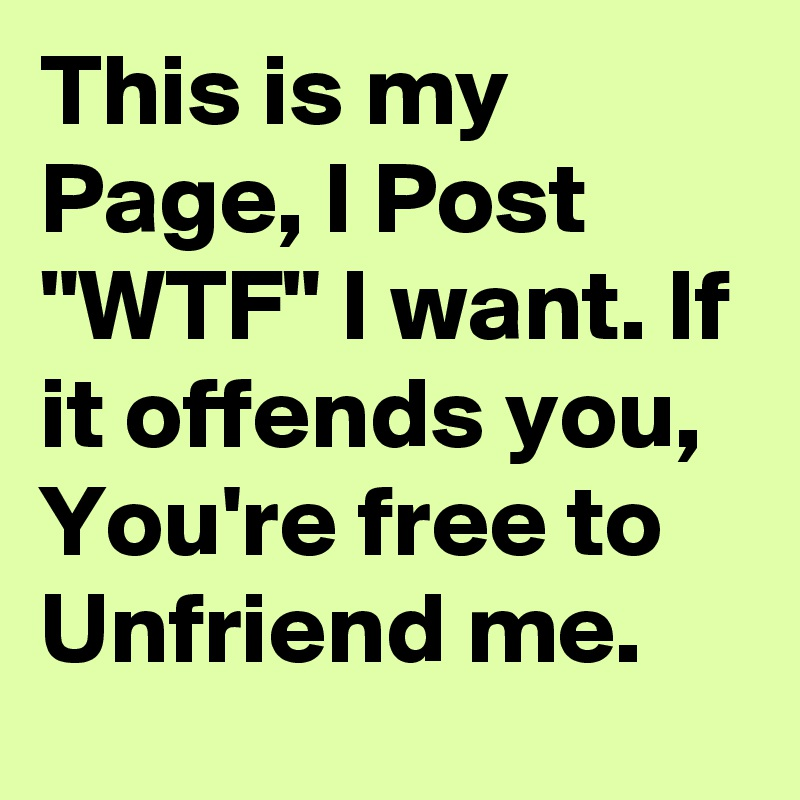

Újraindítási program keretein belül belekezdtem!
Rendezetlen lista:
Rendezett lista, azért mert nem egyenrangúak
Linkek elhelyezése
Innen van a képOlyat is lehet, hogy a linkre kattinva új ablakban nyiljon meg. a-nbelül a target="blank" parancs
linkImg parancsal helyezem be a képet, és src-be a teljes url-t és alt ha a kép nem jelenik meg akkor ez a szöveg fog
De letöltött képpel is lehet!
Itt viszont mentett a kép amely méreteit csökkentettem!
és akkor hogy maga a kép legyen a link
és akkor hogy maga a kép legyen a link,de új lapon nyiljon
Eredeti méretű kép

Saját megjegyzésnek annyit, hogy aképet nem kell lementeni, elég a pontos link de a kép linkje!